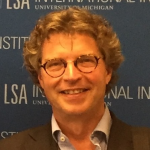

Participants
Eastbound-CODL research team
Elke Brems is associate professor at KU Leuven (Belgium), where she heads the Translation Studies Research Unit. Her research is concerned with intercultural transfer and the circulation of literature through translation and adaptation.
{kind=link}
Born close to the Dutch border in Germany, Theresia Feldmann studied French, German and English literature at the universities of Brussels (VUB) and Nantes. She is currently working on a PhD under the supervision of Elke Brems (KU Leuven) as part of project “Eastbound CODL”. She studies translation trajectories of Dutch-language literature in the German language area.
{kind=link}
Orsolya (Orsi) Réthelyi is assistant professor and acting head of the Department of Dutch Studies at the Eötvös Loránd University of Budapest (ELTE). She also works as a researcher at the Huygens Institute for the History of the Netherlands (Amsterdam). Her present research is focused around intercultural transfer between the Low Countries and Eastern Europe, and the circulation of older and modern literature through translation and adaptation.
{kind=link}
Ton van Kalmthout is a senior researcher in literary history at the Huygens Institute for the History of the Netherlands, a research institute of the Royal Netherlands Academy of Arts and Sciences in Amsterdam. His field of interest is the international distribution and reception of literature in the nineteenth and twentieth centuries.
{kind=link}
Associate partners from the Digital Library and Bibliography of Literature in Translation (DLBT)
Herbert Van Uffelen is professor of Dutch Studies at the University of Vienna. He has published a monography on the reception of Dutch literature in German translation and is the initiator and coordinator of the project Digital Library and Bibliography of Literature in Translation (DLBT).
{kind=link}
Marlou de Bont graduated in Dutch Studies and Literature Studies at the University of Antwerp and the KU Leuven. She is currently working as a research assistant at the department of Dutch Studies of the University of Vienna and is writing a PhD on the works of Hendrik Conscience (1812-1883). Within the Eastbound-CODL project, she is responsible for the communication between Eastbound and the developers of the Digital Library and Bibliography of Literature in Translation (DLBT).
{kind=link}
Assistants
Krisztina Gracza is a graduate student of Dutch Studies at the ELTE University in Budapest, Hungary.
{kind=link}
Michał Hynas is from Poland. Currently he is working on his MA in Dutch philology at the Adam Mickiewicz University in Poznań.
{kind=link}
 Jasmin Streuding studies Dutch (M.A./ M. Ed.) and Philosophy (M.Ed.) at the Carl von Ossietzky University in Oldenburg (Germany).
Jasmin Streuding studies Dutch (M.A./ M. Ed.) and Philosophy (M.Ed.) at the Carl von Ossietzky University in Oldenburg (Germany).
Klára Šrejmová is from the Czech Republic. She is currently finishing a MA programme of Dutch Philology at Palacký University in Olomouc.
{kind=link}
Advisory board
Prof. dr. Jan Ceuppens (KU Leuven)
Prof. dr. Wilken Engelbrecht (Palacký University Olomouc)
Prof. dr. Judit Gera (Eötvös Loránd University of Budapest – ELTE)
Prof. dr. R. Grüttemeier (Carl von Ossietzky Universität Oldenburg)
Prof. dr. Jerzy Koch (Adam Mickiewicz University Poznan)